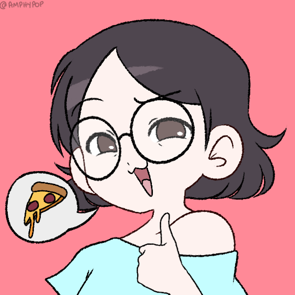

About Me

My name is Juli (she/her) and I attend
Ada Developers Academy
(C17) to become a full-stack developer!
GO 🦈 🦈 🦈 ✨
♌ Leo | 🐲 Dragon
FAVORITES
- Animals: Cats, Capybaras, Cavalier King Charles Spaniel, Frogs, Pallas's Cat, Goats
- Colors: Black, Red, Pink, Purple
- Meals: Hiyashi Chuka, Cold Noodles, Tonkatsu, Mandu/Dumpling, Hotpot, BLT Sandwiches, Shin Ramen, Cheesecake is a meal, fight me.
- Snacks: Sour & Vinegar Chips, ANY sour candy, Rice Crackers, Grilled Squid, Cheese
- Drinks: Sparklier the better, Melon Soda